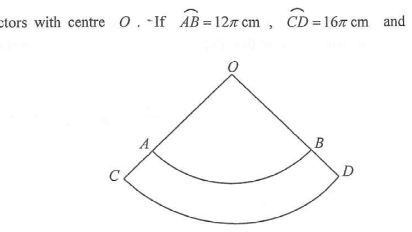

In the figure, OAB and OCD are sectors with centre O. If $\overset{\frown}{AB} = 12\pi\ \text{cm}$, $\overset{\frown}{CD} = 16\pi\ \text{cm}$ and $OA = 30\ \text{cm}$, then $AC =$

Both arcs AB and CD are drawn from the same centre O and they subtend the same angle $\theta$ at O. So the two sectors $OAB$ and $OCD$ are similar figures.
$OA = 30\ \text{cm},\quad \overset{\frown}{AB}=12\pi\ \text{cm},\quad \overset{\frown}{CD}=16\pi\ \text{cm}$
Let $OC = 30 + AC$ (since $A$ lies on $OC$ and $C$ is beyond $A$).
Because the sectors are similar, the ratio of the arcs equals the ratio of the corresponding radii:
$$\frac{\overset{\frown}{AB}}{\overset{\frown}{CD}}=\frac{OA}{OC}$$
$$\frac{12\pi}{16\pi}=\frac{30}{30+AC}$$
$$\frac{3}{4}=\frac{30}{30+AC}$$
$$3(30+AC)=4(30)$$
$$90+3AC=120$$
$$3AC=30$$
$$AC=10\ \text{cm}$$